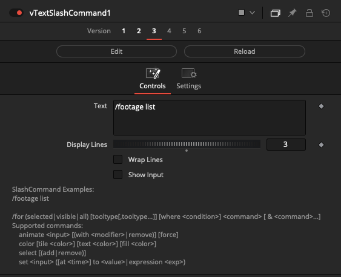

Vonk Node Cookbook
Scrivener Export - Reformatting Needed!
This article is an export of a Scrivener document. It will definitely need at least some reformatting to work in Obsidian and MkDocs. Delete this note once the article's formatting has been fixed to some extent.
Iterating Over Files in a Directory¶
Iterating Over Files in a Directory
A typical node graph that lists a folder's contents, and then iterates per-timeline-frame over the individual files in the list is built like this:
The "vFileSystemListFiles" node generates a list of files. This multi-line block of text is fed into a "vTextReadLine" node that breaks the list down, into one line of data per frame.
The "vNumberCompReqTime" node is preferable to use as the iterator node that increments the "vTextReadLine" output through each line of text in the list of filepaths.
The vNumberCompReqTime" node is typically a better choice than a stock "vNumberCompCurrentTime" node since a request time based tool is capable of advancing on both the current timeline frame, or working with temporal based fuses that would modify the time value when running in a loop.
For visualizing the Text based output in the Inspector tab, a "vTextViewer" node is connected.
Node Connections:
vFileSystemListFiles.Output -> vTextReadLine.Input
vNumberCompReqTime.Output -> vTextReadLine.Index
vTextReadLine.Output -> vTextViewer.Input
Check if a File Exists¶
Check if a File Exists
A node graph that checks if a file exists on disk, then varies the resulting text based output with a Switch node is built like this:
Node Connections:
vFileSystemFileExists.Output -> vNumberAdd.Term1
vNumberAdd.Output -> vTextSwitch.Which
vTextCreate1.Output -> vTextSwitch.Input1
vTextCreate2.Output -> vTextSwitch.Input2
Node Settings:
vNumberAdd.Term2 = 1
Node Screenshots
The vFileSystemExists node is used to check if a file exists on disk. The false/true logic based output is a 0-1 number range.
The vNumberAdd node's "Term2" control is set to a value of "1". This addition process offsets the "Term1" input connection range of a 0-1 number returned by a false/true logical comparison into a 1-2 number range that is suitable for use with the vTextSwitch node.
The vTextSwitch node's "Which" control performs the input switching action.
The output from the vNumberAdd node is connected to the "Which" control by right-clicking on the attribute in the Inspector view. In the popup contextual menu item select the "Connect To > vNumberAdd > Output" entry.
Finally, you can now connect any pair of TextCreate nodes you want to the vTextSwitch node's Input1 and Input2 connections. The Input1 node will be used for the file does not exist (Which = 1) logic state. The Input2 node will be used for the file exists (Which = 2) logic state.
This node structure is effectively simulating a traditional programming language's "Ternary" operator.
Create an IFL (Image File List)¶
Create an IFL (Image File List)
An IFL (Image File List) is a text file that places one filename per line in the document. This approach creates a file that can be used in a Fusion Loader or Saver node as a way to work with image sequences that have unusual naming structures.
A node graph that creates a new an IFL sequence based multi-line text file is built like this:
Node Connections:
vTextCompReqTime.Output -> vTextSubFormat.Input1
vTextSubFormat.Output -> vTextAccumulator.Text
vNumberCompRenderStart.Output -> vTextAccumulator.StartFrame
vNumberCompRenderEnd.Output -> vTextAccumulator.EndFrame
vTextAccumulator.Output -> TextToFile.Input
Node Settings:
vTextCompReqTime.Padding = 4
vTextSubFormat.Format = "Image.{1}.exr"
vTextAccumulator.Separator = "\n"
vTextToFile.File = "Comp:/Sequence.ifl"
Node Screenshots
The vTextCompReqTime node is a quick and convenient way to create a frame padded number that represents the current requested time value when the comp is rendered.
If you wanted to, alternatively, you could use a vNumberCompReqTime node connected to a vNumberAdd node to offset the starting frame number to a value like 1000, or 1001. The vNumberAdd node would then be connected to a vTextFromNumberPadded node to convert the integer value into a leading zero padded based text output format.
(vNumberCompReqTime -> vNumberAdd -> vTextFromNumberPadded -> vTextSubFormat)
The vTextSubFormat node allows us to insert a token, in this case "{1}", to indicate the exact placement in the filename string we wish to add to the frame number component. The "{1}" token in the Format text field represents the text based input connection that is wired into the "Input1" slot on the vTextSubFormat node.
The vTextAccumulator node is used to turn the single line text input into a multi-line block of text by iterating over the start frame to end frame range using temporal effects.
The temporal operations carried out by the vTextAccumulator node are the main reason why we chose to use the "request time" functionality of the vTextCompReqTime node instead of reading the current timeline value of where the playhead is at this exact moment.
The vTextToFile node is used to write the multi-line IFL document to disk.
Create a Frame-Based Number Cycle Using Modulus¶
Create a Frame-Based Number Cycle Using Modulus
The vNumberModulus operator is an efficient way to create a looping number cycle that continuously counts up to a certain predefined value.
The vNumberIntegerCreate node is used to specify the frame duration of the looping cycle.
A Modulus operator causes a looping effect that runs from a starting point of the number zero, upwards to one number less than the value entered in the Divisor field.
If we want the cycle to start at the number one, and run up to the exact value specified in the Divisor field, we can achieve this result with the use of a vNumberAdd node that is used to add the number one to the output value returned by the Modulus node.
Node Connections:
vNumberCompReqTime.Output -> vNumberModulus.Dividend
vNumberIntegerCreate.Output -> vNumberModulus.Divisor
vNumberModulus.Output -> vNumberAdd.Term1
Node Settings:
vNumberIntegerCreate.Integer = 10
vNumberAdd.Term2 = 1
Read a CSV (Comma Separated Value) File¶
Read a CSV (Comma Separated Value) File
CSV (Comma Separated Value) and TSV (Tab Separated Value) files are common ways to transfer spreadsheet exported data between programs.
Being able to parse a CSV file inside of Fusion's node graph is something of a "holy grail" like thing for comp automation, (in addition to JSON reading support), as it allows for interesting capabilities like having external data sources drive fully templated compositing processes from media loading, node based operations, all the way to final media export.
The Easy Approach to CSV Parsing¶
The Easy Approach to CSV Parsing
There are now Vonk custom purpose CSV parsing nodes that can simplify operations. These nodes are named "vTextFromCSV", "vNumberFromCSV", and "vArrayFromCSV".
Let's look at the minimal node based connections required to work with CSV data.
Node Connections:
vTextFromFile.Output -> vTextFromCSV.Input
vNumberCompReqTime.Output -> vTextFromCSV.Row
Node Settings:
vTextFromCSV.IgnoreHeaderRow = 1
The "IgnoreHeaderRow" checkbox allows us to start the CSV line reading process at the 2nd row in the text file so the header text is ignored.
The Low Level Approach to CSV Parsing¶
The Low Level Approach to CSV Parsing
Node Connections:
vTextFromFile.Output -> vTextReadLine.Input
vNumberCompReqTime.Output -> vNumberAdd.Term1
vNumberAdd.Output -> vTextReadLine.Index
vTextReadLine.Output -> vTextSubSplit.Text
vTextSubSplit.Output -> vTextFromArray.Input
Node Settings:
vNumberAdd.Term2 = 1
vTextSubSplit.Pattern = (.-),
Node Screenshots
An initial CSV header row might look a bit like this:
Shot,Filename,Caption,Image,Duration,Comments
The vNumberAdd node's Term2 control is used to shift the initial starting line for the vTextReadLine Index value. This makes it possible to "scroll" the first row read from the external datafile "downwards" past the typical CSV initial text header row entries to output the next data record row in the file.
The vTextReadLine node is used to iterate line by line through the CSV file. This process is typically controlled by syncing the Fusion comp's timeline frame number as the incrementer used to access a specific index value.
If required, you can shift over to using a pair of "NumberIntegerCreate" nodes to target the exact row/column numbers you want to extract from a CSV file. This is handy if you are trying to grab a specific spreadsheet cell to act as the source value that drives custom math formula based operations.
A vTextSubSplit node makes quick work of splitting the CSV document at each comma based separator character.
A Pattern value of "(.-)," is a good starting point to use for a general purpose CSV parser.
If you require extracting TSV (Tab Separated Value) items, or dealing with quoted entries, those options are all possible with a few small tweaks to the Pattern field contents.
The output from the vTextSubSplit node is formatted as an Array object which can then be iterated over to extract an exact column item in the next step.
A CSV formatted line entry that is input to the vTextSubSplit node looks like this:
2,Title02.0001.exr,Take Off,2_Take_Off.0001.exr,12,
The extracted array line entry output from the vTextSubSplit node looks like this:
{"size":5,"array":["2","Title02.0001.exr","Take Off","2_Take_Off.0001.exr","12"]}
The final step of extracting column based values from a CSV formatted spreadsheet is carried out with the "vTextFromArray" node. The "Index" control lets you grab a specific item from the multi-element Array structure.
In this case an "Index" value of 4 would grab the record "2_Take_Off.0001.exr".
It is worth noting that the "Index" value starts counting upwards from a value of 1 (not zero). Sometimes you might have an off-by-one counting error in your logic if you forget this fact and come from a longtime C-code programming background.
If you need to grab a Number based value from a CSV file, you can swap out the usage of a "vTextFromArray" node for a "vNumberFromArray" node. Or alternatively you could use a "vNumberFromText" node to convert the data type as needed.
Further CSV Usage Concepts¶
Further CSV Usage Concepts
If you want to get fancy with CSV parsing techniques it is possible to automatically link an individual .comp file to the external resource on-the-fly. This is best done through the use of SxS (Side by Side) concepts where the base filename for the .comp file and the .csv file are the same.
This is very similar to Fusion Studio/Fusion Render Node's handling of SxS (Side by Side) named .comp and .lua script files.
A SxS + CSV technique allows the comp file to find its matching resource file as soon as it is opened. This approach can be achieved in Vonk through the use of a "vTextCompFilename" node that provides the active comp filename to the node graph.
A "vTextSubReplace" node can swap the file extension by looking for the Pattern ".comp" and replacing it with the ".csv" file extension.
The absolute filepath for the SxS .csv file is then supplied to the initial "vTextFromFile" node.
Read a JSON File¶
Read a JSON File
JSON (JavaScript Object Notation) files provide a common way to export data between programs. JSON file parsing use cases in a compositing package are generally comparable to what an XML or CSV files might be used to hold.
JSON files can be used to carry out comp automation, as it allows for interesting capabilities like having external data sources drive fully templated compositing processes from media loading, node based operations, all the way to final media export.
Let's look at the minimal node based connections required to work with JSON data that has JSON array elements present.

Node Connections:
vJSONFromFile1.Output -> vJSONGet1.Input
vJSONGet1.Output -> vJSONGetElement1.Input
vNumberCompReqTime1.Output -> vJSONGetElement1.Input
vJSONGetElement1.Output -> vJSONGet2.Input
vJSONGet2.Output -> vTextAccumulator1.Text
vJSONGet1.Output -> vJSONCountElement1.Input
vJSONCountElement1.Output -> vTextAccumulator1.EndFrame
Node Settings:
vJSONFromFile1.Input = "Comp:/transforms.json"
vJSONGet1.Key = "frames"
vJSONGet2.Key = "file_path"
vTextAccumulator1.StartFrame = 1
vTextAccumulator1.Sort = 1
vTextAccumulator1.RemoveDuplicates = 1
Node Screenshots
The JSON sample data used is a NVIDIA "Instant NGP" based NeRF camera alignment sample file. It has the metadata for 36 camera views present in the text file.
vJSONFromFile1
The JSON text file is accessed on-the-fly by the comp via the "vJSONFromFile1" node. The data is returned as a text data type to the vJSONFromFile1 node's output connection port.
Fusion relative PathMaps like "Comp:/" can be used in the "Input" field when entering JSON filenames. This makes the Fusion .comp files more portable if you are working with other artists since it avoids using baked-in absolute filepaths.
This is what is shown in the Fusion viewer window when the "vJSONFromFile1" node output is displayed in the Fusion viewer window:
vJSONGet1
The "vJSONGet1" node is used to access a Key named "frames". For the JSON sample file being used in this example, the result is a JSON array object.
This is the viewer window output from the "vJSONGet1" node. Each JSON array element is grouped inside its own set of curly braces:

vJSONCountElement1
The "vJSONCountElement1" node returns the total number of JSON array elements present at the current level of the JSON hierarchy.
For this JSON file reading example there are 36 array values returned, which lines up precisely to 36 camera views.
vNumberCompReqTime1
The "vNumberCompReqTime1" node returns the comp's current "request time" value which is the frame being processed. This node is used as the incrementor for the "vJSONGetElement1" node's "Index" control.
When the comp is rendered or viewed, the "vNumberCompReqTime1" node is able to cycle through the global time range of frame 1 to frame 36 to grab each JSON array "Index" item, one value at a time.
vJSONGetElement1
The "vJSONGetElement1" node is used to scan through a JSON array object and extract a single element from a series of objects. The "Index" control is animated via a Vonk data node connection to parse each of the elements present in the file automatically.

The output from the "vJSONGetElement1" node looks like this:
vJSONGet2
The "vJSONGet2" node is used to access the Key called "file_path". In our sample JSON file this will return a string that holds the name of a specific camera alignment image.
vTextAccumulator1
The "vTextAccumulator1" node allows us to temporally concatenate the output. This builds a list of image filenames from each of the JSON array elements as Fusion scans through the Start Frame to End Frame range values on the node.
The "Sort List" checkbox will alphabetically sort the output. This is handy as JSON files are not guaranteed to be accessed in a consistent order when parsed.
The "End Frame" attribute is connected to the "vJSONCountElement1" node. This causes Fusion to automatically increment through each of the JSON array elements and not miss out on any of the records.
The "Separator" control defaults to "\n". This represents a newline character that will be inserted on each frame that is temporally accumulated by the node into a multi-line block of text.
This is the viewer window output from the "vTextAccumulator1" node:
JSON Samples
When working with ASCII encoded JSON files, there are several different data types you will come across frequently when parsing files. The most common are listed below.
JSON records can hold numbers. A number is entered without any quotes around the value:
"size": 596,
JSON records can hold strings. A string is entered with double quotes around the textual content:
"filename": "Media/CameraA.0001.jpg",
JSON records can hold multiple numbers in an array. Square brackets are used to indicate the start and end of an array:
"size": [2700,2700],
"outputcrop": [0,0,1,1],
JSON records can also hold a series of parameters in an array such as per-frame data when working with metadata for image sequences. It is possible to nest an array inside another array, along with strings and number values, too:
"frames": [
{
"file_path": "images/lion.0001.jpg",
"sharpness": 426.40289615279244,
"transform_matrix": [
[
-0.3837311354109413,
0.18139391420079445,
-0.9054538439920087,
-3.489564789981506
],
[
-0.9107712071674372,
-0.23623269970342953,
0.33865900222128514,
1.2114282762117232
],
[
-0.15246712403082568,
0.9546152939665091,
0.25585819628787304,
1.0404015326771352
],
[
0.0,
0.0,
0.0,
1.0
]
]
},
Creating 3D Materials from Live Web Images¶
Creating 3D Materials from Live Web Images
An exciting element that can be added to data based graphics in Fusion are "live" internet sourced visuals. This includes just about any media resource you can connect to using an http://, https://, or file:// based URL such as live frame-grabbed webcam imagery, traffic cam views, satellite weather graphics, or any other image resource from the web.
An important step if you are connecting a vImageFromNet created image context to a 3D workspace based polygon model is to add a surface material to the mesh first. Otherwise Fusion might instant-quit on you if you try to direct-connect the 2D image texture straight onto the mesh node.
Node Connections:
vTextCreate.Output -> vImageFromNet.Input
vImageFromNet.Output -> Texture2D.Input
Texture2D.MaterialOutput -> Blinn.Diffuse.Color.Material
Blinn.MaterialOutput -> Shape3D.MaterialInput
Node Settings:
vTextCreate.Text = <https://weather.gc.ca/data/satellite/goes_ecan_1070_100.jpg>
vImageFromNet.FileType = "JPEG"
Shape3D.Shape = "Plane"
Node Screenshots
The "vTextCreate" node is handy as it allows us to customize the image URL outside of the node that does the image downloading process.
The sample image we are loading is an Eastern Canada weather satellite image from this URL:
https://weather.gc.ca/data/satellite/goes_ecan_1070_100.jpg
{kind=link}
Note: If you wanted to create the URL string dynamically from a series of separate elements like the website domain name address, a custom user login or password, any sub-folders, the filename, or a series of custom request tokens, you could build this path using multiple text based inputs to a vTextSubFormat node instead.
The "vImageFromNet" node carries out the actual image resource downloading process.
Don't forget to customize the "File Type" setting on the node to give Fusion a hint of the actual image format you are downloading.
The "Texture2D" node provides controls that help with texture placement such as UV coordinate driven scaling and UV translation.
The Blinn node is a general purpose surface material.
Fusion also supports the use of the CookTorrance (PBR) material, Phong material, Ward Material, and finally the Reflect material which is used for environmental reflections.
If you require examples of how to render models using a PBR material shader you can start out with the CookTorrance node and the sample shaders provided by the Reactor Package Manager's "KickAss ShaderZ" collection.
If you need even more surface material features you could explore the (paid) LearnNowFX AccuShaders PBR shading plugin for Resolve Studio/Fusion Studio v17.1+. If you are working on programmable shaders for Fusion Studio v9 on Windows then Chad Capeland's CustomShader3D plugin might be of interest.
The "Shape3D" node is used to create the stand-in geometry the texture is applied to. A variety of platonic solid geometry types are supported.
Note: If you need more control over the mesh, it is possible to switch from a Shape3D node over to using an AlembicMesh3D node to load in .abc format models, or an FBXMesh3D node to load in .fbx or .obj models.
SlashCommands¶
SlashCommands
Vonk has the ability to evaluate and run SlashCommands. When you enter a block of text in a node like "vTextSlashCommand" you are able to apply persistent changes to the Fusion comp.
A SlashCommand is a type of Lua or Python script in Fusion that is normally launched from the Console window by prefacing a command with a leading "/" character.

Installing SlashCommands¶
Installing SlashCommands
The SlashCommand items are typically installed via the Reactor Package Manager and live on disk at the PathMap location of either:
Scripts:/SlashCommand/
or
Reactor:/Deploy/Scripts/SlashCommand/
Using SlashCommands¶
Using SlashCommands
Here is an example of the "SlashFootage" expression syntax:
/footage list
The most interesting SlashCommand from a usability perspective is "SlashFor". The "/for" slash-command is used to quickly and easily apply changes across a number of tools.

Here are examples of the "SlashFor" expression syntax:
Usage
> /for
Usage: /for (selected|visible|all) [tooltype[,tooltype...]] [where <condition>] <command> [ & <command>...]
Supported commands:
animate <input> [(with <modifier>|remove)] [force]
color [tile <color>] [text <color>] [fill <color>]
get <input> ([at <time>])
getattrs <attribute>
select [(add|remove)]
set <input> ([at <time>] to <value>|expression <exp>)
setattrs <attribute> (to <value>)
setclip (to <value>)
setname (to <value>)
version [(up|down|to <value>)]
SlashFor Syntax Examples¶
SlashFor Syntax Examples
Set the Size of all selected tools to 1.0:
/for selected set Size to 1.0
Set "Use GPU" to Disable:
/for selected set UseGPU to 0
/for all ColorCorrector set UseGPU to 0
/for all Merge set UseGPU to 0
/for all set UseGPU to 0
Set "Use GPU" to Auto:
/for selected set UseGPU to 1
/for all ColorCorrector set UseGPU to 1
/for all Merge set UseGPU to 1
/for all set UseGPU to 1
Set "Use GPU" to Enable:
/for selected set UseGPU to 2
/for all ColorCorrector set UseGPU to 2
/for all Merge set UseGPU to 2
/for all set UseGPU to 2
Set the SeetheRate of all FastNoise tools in the comp to 1.0:
/for all FastNoise set SeetheRate to 1.0
Double the current size of each Merge or Transform currently selected:
/for selected Merge,Transform set Size to value*2.0
Select all FastNoise tools:
/for all FastNoise select
Add all tools where Size > 1 to the selection:
/for all where Size > 1.0 select add
Remove all Merge tools where Angle \< 0 from the selection:
/for all Merge where Angle < 0 select remove
Loader Node¶
Loader Node
Set the EXR Part for a Loader node:
/for selected Loader set Clip1.OpenEXRFormat.Part to "C"
/for selected Loader set Clip1.OpenEXRFormat.Part to "directdiffuse"
Set the RGBA EXR Channel names for Loader nodes, one command at a time:
/for all Loader set Clip1.OpenEXRFormat.RedName to "R"
/for all Loader set Clip1.OpenEXRFormat.GreenName to "G"
/for all Loader set Clip1.OpenEXRFormat.BlueName to "B"
/for all Loader set Clip1.OpenEXRFormat.AlphaName to "A"
Set the RGBA EXR Channel names for Loader nodes on a single line:
/for all Loader set Clip1.OpenEXRFormat.RedName to "R" & set Clip1.OpenEXRFormat.GreenName to "G" & set Clip1.OpenEXRFormat.BlueName to "B" & set Clip1.OpenEXRFormat.AlphaName to "A"
Set individual EXR Channel names for Loader nodes, one command at a time:
/for all Loader set Clip1.OpenEXRFormat.RedName to "R"
/for all Loader set Clip1.OpenEXRFormat.GreenName to "G"
/for all Loader set Clip1.OpenEXRFormat.BlueName to "B"
/for all Loader set Clip1.OpenEXRFormat.AlphaName to "A"
/for all Loader set Clip1.OpenEXRFormat.ZName to "Z"
/for all Loader set Clip1.OpenEXRFormat.CovName to "pixelCover"
/for all Loader set Clip1.OpenEXRFormat.ObjIDName to "objectID"
/for all Loader set Clip1.OpenEXRFormat.MatIDName to "materialID"
/for all Loader set Clip1.OpenEXRFormat.UName to "U"
/for all Loader set Clip1.OpenEXRFormat.VName to "V"
/for all Loader set Clip1.OpenEXRFormat.XNormName to "NX"
/for all Loader set Clip1.OpenEXRFormat.YNormName to "NY"
/for all Loader set Clip1.OpenEXRFormat.ZNormName to "NZ"
/for all Loader set Clip1.OpenEXRFormat.XVelName to "velX"
/for all Loader set Clip1.OpenEXRFormat.YVelName to "velY"
/for all Loader set Clip1.OpenEXRFormat.XRevVelName to "rvelX"
/for all Loader set Clip1.OpenEXRFormat.YRevVelName to "rvelY"
/for all Loader set Clip1.OpenEXRFormat.XPosName to "posX"
/for all Loader set Clip1.OpenEXRFormat.YPosName to "posY"
/for all Loader set Clip1.OpenEXRFormat.ZPosName to "posZ"
/for all Loader set Clip1.OpenEXRFormat.XDispName to "dispX"
/for all Loader set Clip1.OpenEXRFormat.YDispName to "dispY"
Set all of the available EXR Channel names for Loader nodes on a single line:
/for all Loader set Clip1.OpenEXRFormat.RedName to "R" & set Clip1.OpenEXRFormat.GreenName to "G" & set Clip1.OpenEXRFormat.BlueName to "B" & set Clip1.OpenEXRFormat.AlphaName to "A" & set Clip1.OpenEXRFormat.ZName to "Z" & set Clip1.OpenEXRFormat.CovName to "pixelCover" & set Clip1.OpenEXRFormat.ObjIDName to "objectID" & set Clip1.OpenEXRFormat.MatIDName to "materialID" & set Clip1.OpenEXRFormat.UName to "U" & set Clip1.OpenEXRFormat.VName to "V" & set Clip1.OpenEXRFormat.XNormName to "NX" & set Clip1.OpenEXRFormat.YNormName to "NY" & set Clip1.OpenEXRFormat.ZNormName to "NZ" & set Clip1.OpenEXRFormat.XVelName to "velX" & set Clip1.OpenEXRFormat.YVelName to "velY" & set Clip1.OpenEXRFormat.XRevVelName to "rvelX" & set Clip1.OpenEXRFormat.YRevVelName to "rvelY" & set Clip1.OpenEXRFormat.XPosName to "posX" & set Clip1.OpenEXRFormat.YPosName to "posY" & set Clip1.OpenEXRFormat.ZPosName to "posZ" & set Clip1.OpenEXRFormat.XDispName to "dispX" & set Clip1.OpenEXRFormat.YDispName to "dispY"
MediaIn Node¶
MediaIn Node
Set the MediaID tag on a MediaIn node:
/for selected MediaIn set MediaID to "445f0cf6-8888-4f2d-9014-1fa8829e9acd"
Set the EXR Part for a MediaIn node:
/for selected MediaIn set Layer to "C"
/for selected MediaIn set Layer to "directdiffuse"
Set the RGBA EXR Channel names for a MediaIn node, one command at a time:
/for selected MediaIn set RedName to "R"
/for selected MediaIn set GreenName to "G"
/for selected MediaIn set BlueName to "B"
/for selected MediaIn set AlphaName to "A"
Set the RGBA EXR Channel names for a MediaIn node, on a single line:
/for selected MediaIn set RedName to "R" & set GreenName to "G" & set BlueName to "B" & set AlphaName to "A"
/for selected MediaIn set RedName to "C.R" & set GreenName to "C.G" & set BlueName to "C.B" & set AlphaName to "C.A"
Set the In/Out time range for a MediaIn node:
/for selected MediaIn set GlobalIn to 0 & set GlobalOut to 47
Animate¶
Animate
Animate Size of all selected tools with default modifier (BezierSpline):
/for selected animate Size
Animate Size of all visible tools (ie not modifiers) with CubicSpline
/for visible animate Size with CubicSpline
Animate Size of all selected tools, replacing any already animated ones:
/for selected animate Size force
Animate Seethe of all FastNoise tools, creating a ramp from 1.0 to 5.0 over 100 frames:
/for all FastNoise animate Seethe & set Seethe at 0 to 1.0 & set Seethe at 100 to 5.0
Remove animation from Size of all selected tools:
/for selected animate Size remove
Expressions¶
Expressions
/for can be limited to a subset of tools using where <expression>:
Set the Size of all selected tools to 1.0, if it's already > 1.0:
/for selected where Size > 1 set Size to 1.0
Set is also able to set actual expressions on node inputs:
Set a Seethe expression on selected FastNoise tools:
/for selected FastNoise set Seethe expression time/10.0
Select¶
Select
The 'select' command changes the active selection of nodes in the Nodes view area:
Select all FastNoise tools:
/for all FastNoise select
Add all tools where Size > 1 to the selection:
/for all where Size > 1.0 select add
Remove all Merge tools where Angle \< 0 from the selection:
/for all Merge where Angle < 0 select remove
Color¶
Color
The 'color' command is used to modify node colors in the Node view.
Set the tile color to red for selected tools:
/for selected color tile 1,0,0
Set the text color to green for selected FastNoise tools with a non-zero SeetheRate:
/for selected FastNoise where SeetheRate ~= 0 color text 0,1,0
Set Name
Rename a node:
/for selected Loader setname to "MyLoader"
/for selected Saver setname to "MySaver"
/for selected Fuse.vTextCreate setname to "Txt"
/for selected Fuse.vNumberCreate setname to "Num"
Set Clip Filenames¶
Set Clip Filenames
Set a Loader node's Clip filename:
/for all Loader setclip to "Comp:/Import.0000.exr"
Set a Saver node's Clip filename:
/for all Saver setclip to "Comp:/Export.0000.exr"
Set Clip Version¶
Set Clip Version
If a Loader or Saver node has a version tag added to the clip filename like "V001" or "v001" then the /for versioning features will be your new best friend.
Set Loader or Saver Node Filename Version Tags
/for selected version up
/for selected version down
/for selected version to 5
/for all version up
/for all version down
/for all version to 99
/for selected Loader version up
/for selected Loader version down
/for selected Loader version to 99
/for selected Saver version up
/for selected Saver version down
/for selected Saver version to 99
Set Attributes¶
Set Attributes
Turn ON the passthrough option for the selected Loader nodes:
/for selected Loader setattrs TOOLB_PassThrough to true
Turn OFF the passthrough option for the selected Loader nodes:
/for selected Loader setattrs TOOLB_PassThrough to false
Get Attributes¶
Get Attributes
Read a node's attributes:
/for all getattrs TOOLS_RegID
/for all getattrs TOOLST_Clip_Name
/for all getattrs TOOLB_PassThrough
Read the most recent render time for the selected nodes:
/for selected getattrs TOOLN_LastFrameTime
Get Input Values¶
Get Input Values
Read a node's inputs:
/for all Transform get Aspect
/for all get StyledText
/for all get Font
/for all get Center
Modify 3D Meshes¶
Modify 3D Meshes
FBX/OBJ 3D Meshes
Rename the node:
/for selected SurfaceFBXMesh setname to "pCubeFBX"
FBX/OBJ - Modify the object name selected from the 3D model hierarchy:
/for selected SurfaceFBXMesh set ObjName to "pCube"
FBX/OBJ - Clear the object name selected from the 3D model hierarchy:
/for selected SurfaceFBXMesh set ObjName to ""
FBX/OBJ - Modify the take name:
/for selected SurfaceFBXMesh set TakeName to "Take 999"
FBX/OBJ - Modify the imported file name:
/for selected SurfaceFBXMesh set ImportFile to "Comp:/Media/pCube.fbx"
/for selected SurfaceFBXMesh set ImportFile to "Macros:/KartaVR/Images/roller_coaster_track.fbx"
Alembic 3D Meshes
Rename the node:
/for selected SurfaceAlembicMesh setname to "pCubeABC"
ABC - Modify the object name selected from the 3D model hierarchy:
/for selected SurfaceAlembicMesh set ObjName to "Mesh/pCube"
ABC - Clear the object name selected from the 3D model hierarchy:
/for selected SurfaceAlembicMesh set ObjName to ""
ABC - Modify the imported file name:
/for selected SurfaceAlembicMesh set ImportFile to "Comp:/Media/pCube.abc"
OFX and Fuses¶
OFX and Fuses
OFX plugins and Fuses can be targeted by SlashFor if you know their node type via the Registry ID value:
/for all ofx.com.frischluft.openFX.DepthOfField select
/for all Fuse.Wireless select
/for all Fuse.vImageWireless select
/for all Fuse.vTextCreate select
Render¶
Render
Render Selected Nodes:
/for selected render
Render Selected nodes step by 25 frames at a time:
/for selected render step 25
Render all Saver nodes:
/for all Saver render
Render all Saver nodes step by 100 frames at a time:
/for all Saver render step 100
SlashFor Development¶
SlashFor Development
On the Steakunderwater forms Reactor Submissions thread for SlashFor there is an ongoing effort to evolve the feature set. If you have an idea for a must-have feature. Post it on that thread.
Script to add all Vonk Nodes to a Comp¶
Script to add all Vonk Nodes to a Comp
The following Lua code snippet will add all of the currently installed Vonk fuse nodes to the foreground Fusion composite:
-- Based upon Cedric's "Create All Nodes" Lua Script:
-- <https://gist.github.com/cedricduriau/125cd3b84ab72cc1afc85ebfe943193c#file-fusion_createallnodes-lua>
print("[Create All Vonk Nodes]")
reg_map = fusion:GetRegList() -- dict[int, Registry]
for _i, reg in ipairs(reg_map) do
if reg.ID:match("^Fuse.v") then
print("[" .. _i .. "]", reg.ID)
comp:AddTool(reg.ID)
end
end
Vonk Example Projects¶
Vonk Example Projects
Vonk Mission Control¶
Vonk Mission Control
The "Mission Control" Vonk data node example simulates a small propellor-powered aircraft's cockpit dashboard by rendering a mix of digital and analog style gauges. The logic for the controls is wired together using Vonk Number and Text data types.
This example is available for installation using the Reactor Package Manager. Navigate to the "Kartaverse/Vonk Ultra" category on the left side of the Reactor window to locate the atom package named "Vonk Example | Mission Control".
Vonk Tips¶
Vonk Tips
Customize the Control Range¶
Customize the Control Range
When you place Vonk data nodes, or any other type of Fusion node in a composite, you have the option of opening the Inspector and using the right-click "Edit Controls..." dialog to remap the default control range for any parameter to fit the natural range for the attribute you are adjusting.
If you need a value to be adjusted by default for a slider or screw control so the range of motion would go from 0-10, 0-100, -100 to 100, 0 - 255, 0 - 1000, etc you can customize the "Range" parameters two attributes to work on that range that feels comfortable.
This makes the user experience better so an artist gets the desired control responsiveness needed when they drag the slider fully to the left or right.
It is also possible to apply hard limits to the valid minimum/maximum number you can enter in the number fields, too. This is done with the "Allowed" number fields in the Edit Control dialog.. Normally a lot of numbers in Fusion's own native tools look like they are limited to 1 million. If you enter the allowed range as "-1e+38" and "1e+38" you can fully unlock the maximum numerical size allowed in a floating-point 32 bit number representation.
Applying UserControls on a Node¶
Applying UserControls on a Node
Listed below is a macro ".settings" snippet of code for a vNumberCreate node that has a UserControls based customization applied. The Number input is displayed as a SliderControl type, and the slider goes from 0 - 100. The number is set to increment as an integer, and the default for the control is 0.
{
Tools = ordered() {
vNumberCreate1 = Fuse.vNumberCreate {
CtrlWZoom = false,
ViewInfo = OperatorInfo { Pos = { 327.333, 115.848 } },
UserControls = ordered() {
Number = {
LINKS_Name = "Number",
LINKID_DataType = "Number",
INPID_InputControl = "SliderControl",
INP_Default = 0,
INP_Integer = true,
INP_MinScale = 0,
INP_MaxScale = 100,
INP_MinAllowed = -1e+38,
INP_MaxAllowed = 1e+38,
ICD_Center = 50,
IC_Steps = 10,
ICS_ControlPage = "Controls"
}
}
}
},
ActiveTool = "vNumberCreate1"
}
Clamping Number Values¶
Clamping Number Values
One other final process that can be done to keep values sane when user inputs allow an artist to enter whatever they want, is to add a vNumberClamp node after several math operations are carried out. The vNumberClamp node gives you a parametric governor / limiter result. The clamp node input connections can live update on what is a valid Minimum/Maximum range as well with their own vNumber datatype connections on the clamp node.
This means the node graph can self-limit the minimum and maximum vNumber range allowed at that point in the comp niode-graph. This limiting process can be fed with values like the current array size, or JSON element count, a text file's total line number count, or the global/render start and end frame ranges.
Taking this step to keep the numbers from overshooting a realistic value keeps macros and automated templates you build from breaking by accidental out-of-bounds user input.
Vonk Known Issues¶
Vonk Known Issues
Fusion Timeline¶
Fusion Timeline
The Fusion timeline is limited to 1 million frames in maximum duration. This can be an issue if rendering Fusion comps that process multi-hour long action camera footage at 60 FPS.
Lua Patterns¶
Lua Patterns
When carrying out sub-string operations like find & replace edits with Vonk data nodes you can come across the need to escape Lua pattern special characters. This can typically be done by prefacing a character with a % sign like "%%".
This approach can be used with the "vTextSubFormat" node when trying to pass through an element like "{1}" by escaping the curly braces like this "%{1%}" if you are trying to place a string inside another string in a nested vTextSubFormat node usage fashion.
vNumber¶
vNumber
Prior to Vonk v1.10 the Number DataTypes had the Fusion default clamped value limit of 1 million (1e+06). This limitation was removed by adding the following attributes on the fuse vNumber inputs:
INP_MinAllowed = -1e+38,
INP_MaxAllowed = 1e+38,
Several of the vNumber nodes in the "Comp" sub-category will cache their values and not update when the user changes parameters. This means you will likely need to close and re-open the comp file in the Fusion Studio GUI if you change the Fusion timeline's Global/Render based start/end frame range values and want to see that value reflected in the Vonk "Comp" node outputs. This is due to the following fuse parameters being commented out for performance reasons:
--REG_TimeVariant = true, -- required to disable caching of the current time parameter
--REGB_Temporal = true, -- ensures reliability in Resolve 15
vText¶
vText
Vonk Text DataType based outputs that contain certain non-printable ASCII control characters embedded in the output stream can have the content terminated prematurely. This is a Fusion API limitation. Passing the information down the flow can be achieved either through passing a reference to a filename on disk as the text output, or by encoding the string in a format like Base64 text so the control characters are encapsulated.
The Fusion viewer window context doesn't render text blocks with newline characters precisely. Feeding the text content into a vTextViewer node will give more precise previews for display of multi-line textual content.
JSON key/value pair data has an indeterminate reading order when re-imported several times. Possible solutions to this issue is to sort the results alphabetically if you are building a multi-line based list of textual results.
The "vTextAccumulator" node generates out-of-sequence results in the concatenated output if the "start_frame" control's value is changed from a "normal-ish" render start frame range value of frame 0 or 1 over to a VFX industry style of start frame value of frame 1000 or 1001. The issue is still being explored.
The "vTextProcessOpen" node does not return standard error messages on the text output connection. You will have to redirect the shell's standard output and standard error streams together in the command string being run if you need to troubleshoot issues. This is done by appending the following text, while omitting the quotes " 2>&1" to the end of the command being run.
An example of a macOS or Linux string that would generate a shell error that you would not otherwise see would be "mkdir "/hello" 2>&1". By adding the STDERR to STDOUT redirection we can now see the error message text "mkdir: /hello: Read-only file system".
The "vTextRenderComp" node works on macOS and Linux. The Fusion Render Node executable on Windows does not function correctly when launched internally by the vTextRenderComp node. A work-around for Windows users looking for the same functionality would be to use the Fusion built-in RunCommand node to carry out a similar nested rendering task.
The "vTextExecute" node runs asynchronously from the main rendering task. This is due to the use of the function "self.Comp:Execute()". This means the output is returned in a thread separate from the order of the comp branch rendering operation.
The cURL based Vonk nodes will not follow HTTP redirection commands returned by web servers hidden behind CloudFlare and other CDNs. You can explore workarounds like using a vProcessOpen node to run cURL from the command-prompt to be able to use Vonk in these types of situations. Note: Windows now includes the cURL executable by default with the OS so you can reasonably expect cURL to be present on all platforms. Note: If you need to specify the full absolute path to cURL for each OS platform, you can use the Vonk vTextCreatePlatformBrowse node to assist.
vArray¶
vArray
The "vArrayFromMediaIn" node requires you to be in a Fusion page compositing context and have the source footage loaded in the viewer before the MediaIn based metadata is accessible to downstream nodes.
The "vArrayFromXML" node is experimental. There appears to be a memory leak in the array structure size that results in duplicate array elements being created and appended to the xml2lua based Lua table record over concurrently rendered timeline frames.
This vArrayFromXML node based issue is visible when a downstream "vJSONGetElement" node is rendered for the first time while accessing an array index value. In this situation a console error is output, while subsequent re-renderings succeed further along in the timeline sequence. A solution to this issue is being investigated.
vMeta¶
vMeta
The "vMetadataFromMediaIn" node requires you to be in a Fusion page compositing context and have the source footage loaded in the viewer before the MediaIn based metadata is accessible to downstream nodes.
vImage¶
vImage
The "vImageFromClipboard" node only works on Windows since it uses a supporting executable called "Clipboard2bmp.exe". There appears to be an issue running this node in Fusion Studio v18 that is being investigated.
The "vCryptomatte" node cannot access EXR based multi-part elements. This node is designed to work with multi-channel EXR images. It is possible down the road to update the Cryptomatte fuses to access multi-part image elements (from renderers like Houdini KARMA) with the Fuse based EXRIO library but the required API documentation to do this has not been publicly released by BMD yet.
The "vCryptomatte" node relies on the Lua Metadata based "Filename" record when loading cryptomatte channel data. This means the node works successfully with a Loader node as it provides the Filename record. A Resolve based MediaIn node does not provide this Filename record information, so you would need to either switch over to using a Loader node, or append the Filename record to MediaIn node's output stream using a SetMetadata fuse or the vMetadataFromText fuse.
The "vImageCreateTiles" works by appending temporally a series of images fed into the node to create a grid layout. If you aren't paying attention you can get rendering error messages by exhausting the available frame range that Fusion can query. Each image that is combined together in the grid layout is loaded by querying the timeline's render start frame - global end frame range. If you want to render a single tiled grid image output that is 1 frame long but has 100 tiles compacted together (Tiles X = 10, Tiles Y = 10) then you could set the Render Start Frame = 1, the Render End Frame = 1, and the Global Start Frame =1, and Global End Frame = 100.
The "vImageFromFile" node needs special care when used as a source texture on a Fusion 3D workspace based surface material. Look at the Vonk Cookbook topic for the "Creating 3D Materials from Live Web Images" example to see how to hook a 2D image to a Texture2D node, then a surface material like Blinn before connecting the image data to a mesh.
The "vImageEXRFromFile" node's "EXR Part Number" control is experimental and should be left alone. Adjusting this parameter on a single part-based image will likely result in Fusion crashing due to an out of bounds exception like error.
The "vImageEXRToFile" node saves out RGBA channels from the input image frame buffer. If you require more control over the exported imagery look at the Reactor provided "pioSaver" or "LifeSaver" nodes.
The "vImageToFile" node requires Fusion v16.x+ or higher due to the reliance on the Fuse API based "clip:Open()" function and the clip:PutFrame() function.
vScriptVal¶
vScriptVal
A ScriptVal node's output is typically an encoded Lua table structure. If you want to work effectively and preview the live data outputs you will need to wire in a vScriptValDump node, or a combination of the vScriptValToText + vTextViewer nodes.
The vScriptValDump node writes the Lua table structure to the Console window.
The vScriptValToText + vTextViewer node approach makes the output selectable in the Inspector tab. This makes it easier to copy a "Key" from the output text and use it in a subsequent vScriptValGetToTable node.
vPoint¶
vPoint
Make sure to load the vPointFromMousePos node's output into the left or right viewer window before displaying a downstream node like a b-spline shape and a Transform node that is driven by the mouse position value via a "Connect To" approach.
Failure to view the vPointFromMousePos node before displaying the downstream node will likely lead to lockups in Fusion v18.
ShapeTree DataType¶
ShapeTree DataType
A Fusion ShapeTree datatype accessibility bug was reported to BMD at the end of July 2022 and the issue was confirmed. This bug affects the usability of all ShapeTree based fuses in Fusion v17-v18.0.x. Hopefully a bugfix from BMD will solve an issue where a connected sRender nodes' input is rendered as a transparent canvas if a Fuse is placed upstream in the toolchain.
YAML Parsing Libraries¶
YAML Parsing Libraries
The initial implementation of the Vonk YAML nodes like "vArrayFromYAML" and "vScriptValFromYAML" are powered by a Lua Module called "Exosite LuaYAML" which is written in pure Lua code.
There is an effort underway to allow users to select from a variety of drop-in compatible YAML parsers so you could optionally access c-code compiled libraries like LibYAML. This will extend the supported YAML syntax, and features, available in Vonk while also improving the performance when processing large YAML data files. LibYAML will make it possible to support YAML data export.
Fusion() and Resolve() Connections from a Fuse¶
Fusion() and Resolve() Connections from a Fuse
Several Vonk nodes connect to the Fusion() and Resolve() functions from inside the Process part of the fuses. In these types of situations, typically having multiple copies of the host program active at the same time on the host system would cause issues with the remote FuScript binding processes.
In Vonk Ultra v1.124 the following changes were made to ensure the correct FuScript connection is made automatically:
local fusion = Fusion("localhost", 0, bmd.getappuuid())
local resolve = Resolve("localhost", 0, bmd.getappuuid())
Data Nodes in Macros¶
Data Nodes in Macros
It has been occasionally noticed during Vonk development work that MacroOperator and GroupOperator encapsulations of Text datatype input connections can have the input "triangle-shaped" connection points mangled on a larger combined macro node group object. This bug still has to be troubleshooted and reported to BMD once the root cause has been determined.
You will notice this issue has happened to you when you expand the GroupOperator in the Nodes view area. When you look inside the group node's working area, the input connection wire goes off to the top/left corner zone "outwards and upwards" to a near infinity of panning the view. Strange stuff.
A temporary workaround solution to this issue is to place a vTextWireless link node inside your macro. Expose the wireless node's "ImageControl" attribute in the Inspector GUI for the macro and use that as the way to make connections to data nodes packaged inside this Macro object.
FWIW, if your end goal was to create a data node that could be used in a Resolve Edit page Effects Template, you are going to have to pass only image data on the macro's input and output connections in the end anyway. This means data nodes inside the macro group should be accessed via wireless links, or the Inspector view's right-click "ConnectTo" pop-up contextual menu by outside nodes.
Another alternative would be to skip the GroupOperator "shell" on the macro, and for intermediate/advanced users simply expose the Vonk nodes placed inside an Underlay object. Then let the user always have access to the nodes for customization/reworking.
This Group node based input connection linking bug will likely be solved in time, but currently this is the situation faced today (2022-08-05).